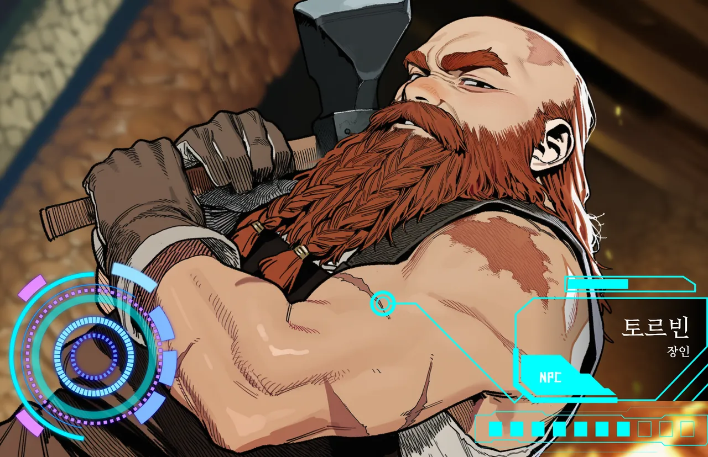

표정←→
원주민툴가르드 · 드워프
토르빈
무기를 대하는 태도로 사람을 본다.
- LV
- 49
- ROLE
- 툴가르드 장인
- AGE
- 남 · 186
툴가르드 최고의 제작·강화·각인 장인. 하눔을 모신다. 186세면 드워프로선 한창때인데, 나이는 물어도 잘 안 밝힌다.
외지인에겐 기술을 안 판다. 친밀도 없으면 문 앞에서 돌려보내고. 장비 쉽게 버리는 이방인은 질색이지만, 재료를 직접 캐 오는 사람에겐 작업장 문을 연다. 인정한 상대에겐 수리비도 안 받는다.
“흠.”
- 외형
- 대머리, 금속 고리를 끼운 긴 붉은 땋은 수염, 화상 흉터, 검은 작업 앞치마
- 말투
- 퉁명한 반말. 상대를 "애송이"라 부르다가도, 기술 얘기만 나오면 말이 길어진다.